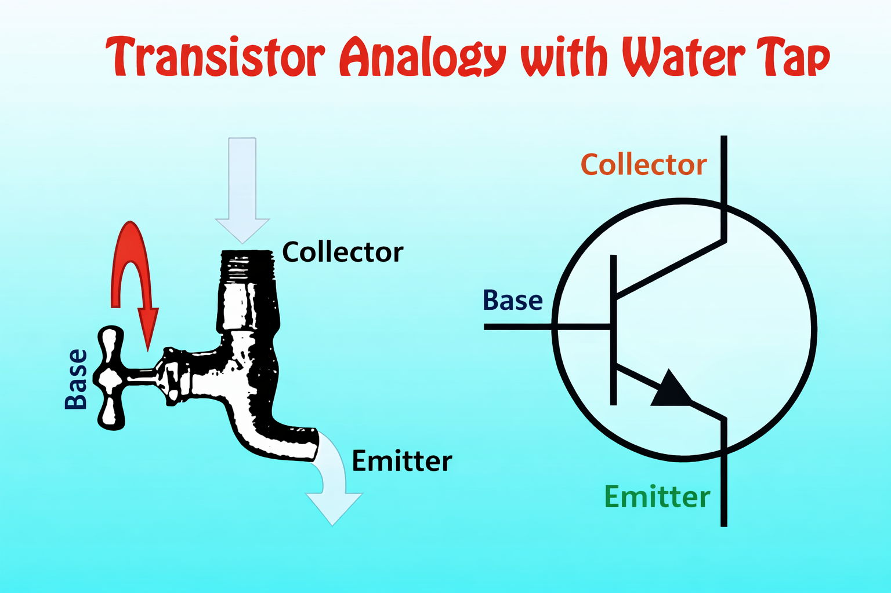
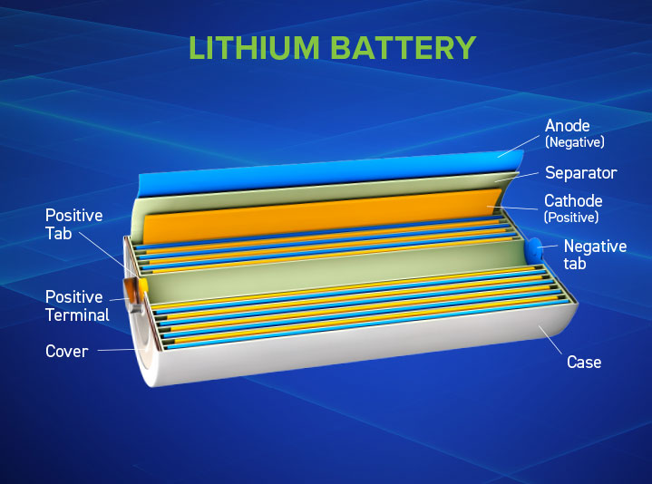
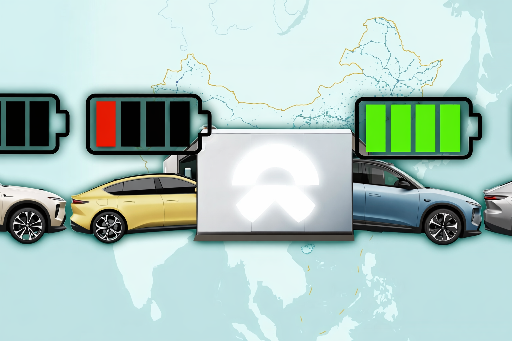

The transistor is a semiconductor device that can amplify or switch electronic signals. Transistors consists of three layers of semiconductor material (typically silicon) arranged in either an n-p-n or p-n-p configuration. These layers are called the emitter, base, and collector.

Think of a transistor like a valve controlling water flow. A small signal at the base (like turning a faucet handle slightly) controls a much larger current flowing between the emitter and collector (like the water rushing out). This ability to control large currents with tiny signals makes amplification possible.
The transistor revolutionized electronics by replacing vacuum tubes, which were large, hot, fragile, and power-hungry. A single modern computer processor contains billions of transistors, each one microscopic in size. The Apple M2 chip, for example, packs over 20 billion transistors into a space smaller than a postage stamp.
Without transistors, none of our portable electronics would exist. Your smartphone, laptop, smart watch, and wireless earbuds all depend on millions or billions of transistors working together. The transistor's small size, reliability, and low power consumption made mobile computing possible.
Beyond consumer electronics, transistors enable the servers running the internet, the satellites providing GPS, the medical devices monitoring patients, and the controllers managing power grids. The transistor is arguably the most important invention of the 20th century.
The Information Age began when we could process, store, and transmit data electronically at scale. Transistors made this possible in three key ways:
First, miniaturization. As transistors shrank following Moore's Law (doubling in density roughly every two years), computers transformed from room-sized machines into pocket-sized devices. This allowed information technology to permeate every aspect of modern life.
Second, reliability and efficiency. Vacuum tube computers like ENIAC required constant maintenance and consumed massive amounts of power. Transistor-based computers could run continuously and efficiently, making practical business computing feasible.
Third, affordability. Mass production of transistors drove costs down exponentially. What started as a $20 device in the 1950s became fractions of a cent per transistor by the 2000s. This economic accessibility democratized computing and communication technology.
As Gertner (2012) notes, Mervin Kelly predicted the transistor would transform electronics into systems "more like the biological systems of man's brain and nervous system" (p. 19). This vision materialized as transistor-based integrated circuits enabled the development of microprocessors, personal computers, the internet, smartphones, and artificial intelligence. The ability to pack more computational power into smaller spaces continues to drive innovation today, from AI chips to quantum computing research.

The lithium-ion battery stands as one of the most transformative technologies of the Information Age. Without it, our smartphones, laptops, electric vehicles, and wireless devices would be tethered to wall outlets, fundamentally limiting the mobility that defines modern computing.
Lithium-ion batteries work by moving lithium ions between two electrodes, a positive cathode and negative anode, through an electrolyte solution. When charging, lithium ions move to the anode and store energy; when discharging, they flow back to the cathode, releasing that energy to power our devices. What makes lithium ideal is its unique combination of properties: it's the lightest metal on the periodic table, yet it can store tremendous amounts of energy relative to its weight (Linden & Reddy, 2002).
The technology earned John B. Goodenough, M. Stanley Whittingham, and Akira Yoshino the 2019 Nobel Prize in Chemistry for their pioneering work developing the modern lithium-ion battery ("The Nobel Prize," 2019). Today, these batteries power everything from the smartphone in your pocket to Tesla's electric vehicles to grid-scale energy storage systems that support renewable energy infrastructure. The global lithium-ion battery market was valued at over $44 billion in 2020 and continues to grow exponentially as we electrify transportation and transition to renewable energy (Zubi et al., 2018).
Despite lithium's (Li, atomic number 3) abundance in Earth's crust, we face a looming supply crisis. Lithium exists primarily in two forms: hard rock deposits and salt brine lakes. The majority of economically viable lithium comes from the "Lithium Triangle" spanning Chile, Argentina, and Bolivia, which contains over 75% of the world's known reserves (Kavanagh et al., 2018).
The extraction process, particularly from salt flats, is water-intensive and environmentally damaging. In Chile's Atacama Desert, lithium mining consumes approximately 500,000 gallons of water per ton of lithium produced, in one of the driest places on Earth (Flexer et al., 2018). This threatens indigenous communities and fragile desert ecosystems.
Demand is outpacing supply dramatically. According to current projections, global lithium demand could increase by 400% by 2030, driven primarily by electric vehicle production (Stamp et al., 2012). While we're not in immediate danger of completely running out of lithium, we face serious challenges: existing mines cannot scale fast enough, opening new mines takes 5-7 years, and geopolitical concerns arise as supply chains are concentrated in a few countries.
The solution may lie in battery recycling technology and alternative battery chemistries. Currently, less than 5% of lithium-ion batteries are recycled, but companies are developing processes to recover up to 95% of lithium from used batteries (Harper et al., 2019). As our dependence on lithium grows, developing a circular economy for this critical element becomes essential for sustaining the Information Age.

Imagine pulling into a station similar to a car wash, where in under five minutes a robotic system removes your electric vehicle's depleted battery and installs a fully charged replacement. You drive away immediately, no waiting, no plugging in, no tipping. This is the vision of automated battery swap networks, a technology that could fundamentally reshape electric vehicle adoption and solve critical infrastructure challenges.
The system works through standardized battery packs that can be rapidly exchanged by automated machinery. Drivers subscribe to a battery service rather than owning the battery itself. When you need a charge, you simply drive to a swap station where robotic arms unlock your depleted pack, slide it out, and install a fresh one in minutes. The removed battery enters a charging queue at the station, ready for the next customer.
Battery swap stations already exist in limited form. NIO, a Chinese electric vehicle manufacturer, operates over 1,300 swap stations across China and Europe, completing millions of battery swaps. Gogoro has built a successful network for electric scooters in Taiwan with over 12,000 swap stations. Tesla even attempted the technology in 2013 but abandoned it in favor of Supercharger networks.
The primary barrier to electric vehicle adoption is not technology but psychology and infrastructure. People worry about running out of charge, waiting hours at charging stations, and battery degradation reducing their vehicle's value. Battery swap networks address all three concerns simultaneously.
First, swap stations eliminate charging wait times entirely. While even the fastest DC fast chargers require 20 to 30 minutes for an 80% charge, a battery swap takes three to five minutes, comparable to filling a gas tank. This makes electric vehicles viable for long road trips and commercial use cases like delivery fleets and taxis that cannot afford downtime.
Second, subscription-based battery ownership separates the vehicle from its most expensive component. Consumers buy the car but lease the battery, dramatically reducing the upfront cost of electric vehicles. When battery technology improves, subscribers automatically benefit from upgrades at swap stations without buying a new car.
Third, centralized battery management optimizes the entire ecosystem. Swap stations can charge batteries during off-peak hours when electricity is cheapest and greenest, reducing grid strain. Stations can monitor each battery's health through detailed charge cycle data, routing degraded batteries to less demanding applications or recycling before failure.
Most critically, battery swap networks create the circular economy that lithium supply constraints demand. Every battery in the system is tracked, monitored, and eventually recycled with maximum efficiency. There are no abandoned batteries sitting in garages or ending up in landfills. The system knows exactly when each battery reaches end-of-life and can route it to recycling facilities to recover lithium, cobalt, and other critical materials.
Ironically, widespread adoption of battery swap networks could help address the lithium scarcity problem discussed earlier, but it also introduces new material challenges.
The standardization required for swapping creates a double-edged sword. On one hand, standardized battery packs enable economies of scale in manufacturing and recycling. On the other hand, achieving industry-wide agreement on battery standards is extraordinarily difficult. Different automakers prefer different battery chemistries, sizes, and configurations optimized for their specific vehicles. China has begun mandating battery standardization, but global consensus remains elusive.
The infrastructure itself demands significant material investment. Each swap station requires multiple battery packs in inventory, specialized robotics, and charging equipment. Building a nationwide network comparable to existing gas stations would require millions of battery packs simultaneously, creating a massive spike in lithium and cobalt demand before the recycling benefits materialize.
However, the long-term material equation favors swap networks. Because batteries remain in a managed system rather than individual ownership, their lifecycle can be optimized. Batteries degraded for automotive use (typically around 70 to 80% capacity) can be repurposed for stationary energy storage at swap stations themselves, extending their useful life before recycling. When recycling does occur, the centralized system ensures maximum material recovery.
The shift from individual battery ownership to battery-as-a-service could transform how we think about resource management in the Information Age. Rather than millions of people each owning a battery that degrades independently, we could have shared battery pools maintained at peak efficiency, maximized for lifecycle, and recycled systematically. This model could extend beyond vehicles to other battery-dependent technologies, creating a sustainable foundation for our increasingly electrified world.
When I asked my wife, Rudrani Chatterjee, about the battery-as-a-service model, she was very supportive. She liked that the battery pool contributes to sustainability and that she doesn't need to know how to change the battery herself. This shows that even non-technical people can appreciate the practical benefits of such innovations.
Rudrani's reaction was a bit underwhelming, which may hint at the reaction of the public at large. I'll admit that the technology isn't sexy, but once the consumers see the benefits of this model, they may be more receptive to it.